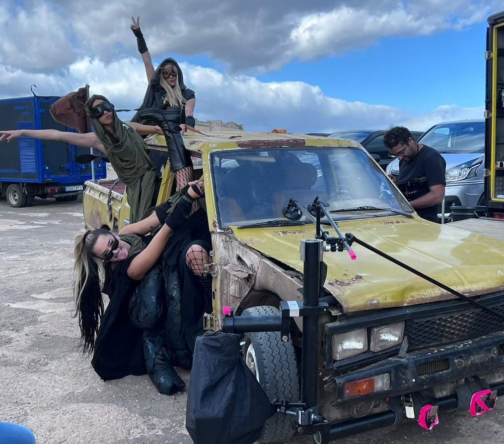

VIDEOCLIP · DESTACADO
DURO - Quevedo (Official Video) | BUENAS NOCHES
Una pieza para mostrar el tipo de producción en el que el trabajo GRIP, el movimiento de cámara y la coordinación en localización resultan decisivos.
FILMOGRAFÍA · RODAJES · CANARY ISLANDS
El mejor modo de entender el material es verlo trabajando. Esta selección reúne piezas reales donde el movimiento, los rigs, el camera car y el soporte de cámara forman parte del resultado final.
SELECCIÓN DESTACADA
Videoclips, campañas y ficción. Haz clic en cualquier pieza para reproducirla sin salir de la web o abrir el original en su plataforma.
VIDEOCLIP · DESTACADO
Una pieza para mostrar el tipo de producción en el que el trabajo GRIP, el movimiento de cámara y la coordinación en localización resultan decisivos.
Los vídeos se reproducen desde YouTube o Vimeo. Si el propietario de una pieza limita la reproducción embebida, utiliza “Abrir original”.
BEHIND THE SCENES
Además del resultado final, estas imágenes muestran configuraciones de rodaje, rigs y trabajo en localización.




CAPACIDADES
Soluciones para secuencias de automoción, travelling, estabilización y puntos de vista elevados, adaptadas a las necesidades de cada producción.
DISPONIBILIDAD · PRESUPUESTO · PRODUCCIÓN
TENERIFE
Lope de Vega, 16
Santa Cruz de Tenerife
GRAN CANARIA
Josefina Mayor, 48
Telde